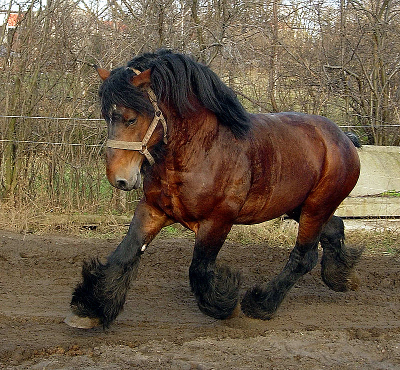

Tração
Belga
Altura: 1,65 – 1,75 m
Peso: 800 – 1.000 kg
Cor: alazão (ruão-avermelhado) com crina e cauda claras, quase brancas; também baio e ruão.
Pelos: curtos no corpo, com franjas leves nas quartelas; crina e cauda muito fartas.
Uma das raças mais fortes do mundo, dócil e trabalhadora. Origem: Bélgica.